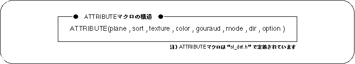
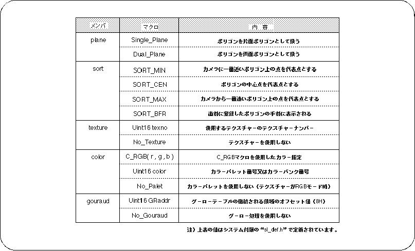
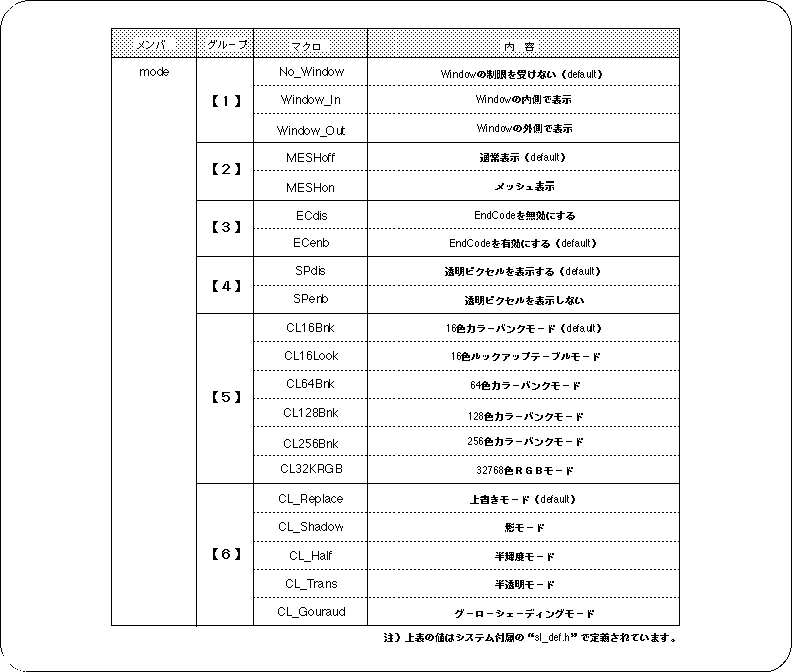
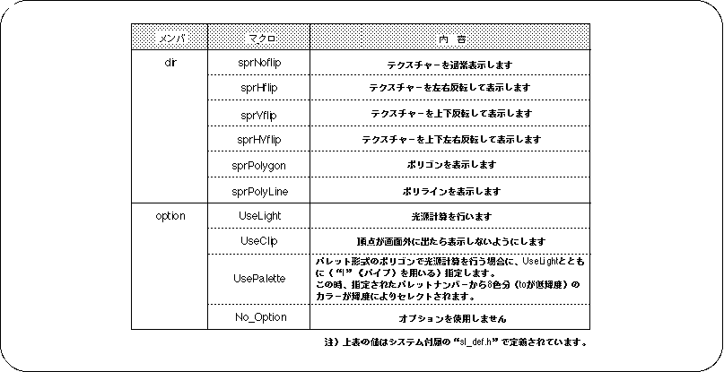

Return to previous page | Return to menu
The following is the structure of ATTRIBUTE macro used in SGL and the list of macro substitution values for each member. Please refer to Programmer's Tutorial “Chapter 7: Polygon surface attribute” for details of polygon surface attribute setting by ATTRIBUTE macro and actual usage example.

The ATTRIBUTE macro includes the following members:
Refer to the list of substitution values for the macro substitution values for each member.
plane: Specify the front and back attributes. sort: Determines the representative point of the Z sort. texture: Assign texture number or No_Texture. color: Assigns the color of the polygon surface specified by the C_RGB macro or No_Palet. gouraud: Specify the start address of the area where the gouro table is stored. Assign No_Gouraud if you do not want to use Gouraud processing. mode: Specify various polygon modes. Multiple assignment values for each group can be concatenated with the or operator “|” to specify multiple values simultaneously. dir: Sets the texture inversion function. option ： Sets other polygons, connected by the or operator “|”, and multiple simultaneous settings are possible. When no option is used, substitute No_Option.



Note) Specification restrictions related to texture:
Do not specify “sprHflip” or “sprVflip” if no texture is used for the object.